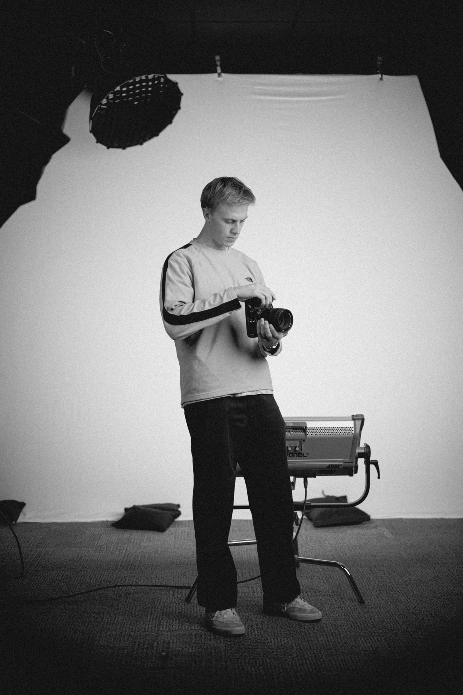

About me
I’m Jonah. I’ve been making videos since I was a kid, and I still care most about the moment someone stops scrolling.

I work across the whole process, from briefs and concepts to filming and editing in several editing suites, including DaVinci Resolve, Premiere Pro, Final Cut Pro, and CapCut.
Off camera, you’ll usually find me fly fishing, mountain biking, or hiking with my wife.
See the work ↗A few things I believe
01 Good stories make people want to act, not just watch.
02 Every brand is already telling a story. The question is whether it’s a good one.
03 The best persuasion doesn’t feel like persuasion.
Want to work together?